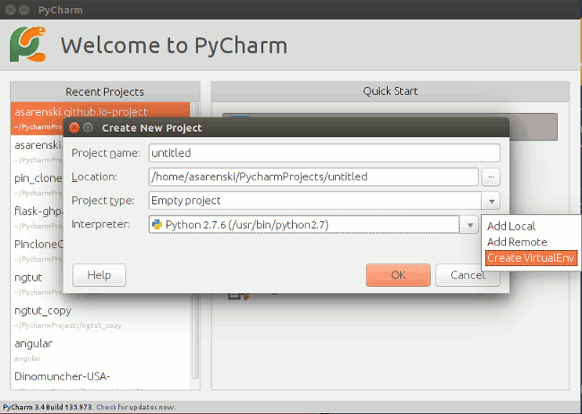
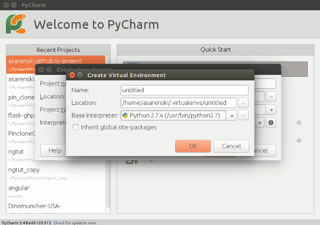
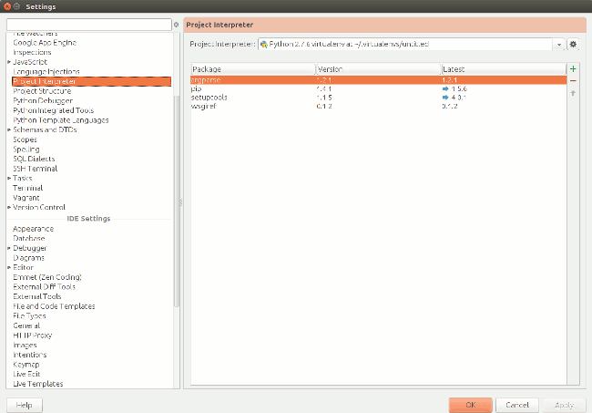

Dinomuncher was created entirely in the Ubuntu environment. It's free and easy to set up. If you're currently using Windows, then this is your best option. My recommendation is Ubuntu 14.04LTS. It is new as of April, 2014. It has features akin to Windows 7. It will also be supported for 5 years.
If you have trouble with this installation, a quick Google search of the error will lead you in the right direction.
If you decide you would like to use an older version of Ubuntu you will have a lot of updating to do. For example Ubuntu 12.04LTS comes standard with Python 2.7.3. The interpreter for Dinomuncher is Python 2.7.6. Some of the modules written about below are much easier to set up in 14.04LTS.
Most likely your system is already set up to run Python. For example Mac OS X 10.8 comes with Python 2.7 pre-installed by Apple.(reference) Unfortunately this guide will only provide information on an set-up in Ubuntu.
You can still play Dinomuncher though! Clone the Dinomuncher-USA-.git. Run DinoMainNoSound.py for a simple installation. If desired, you can probably figure out how to install the module necessary for sound on Mac by reviewing the Ubuntu environment installation.
It is not recommended that one uses Windows as their Python environment. There are many awesome, free tools that make development easier. Most of the documentation I've seen only covers Linux installation. This means that Ubuntu and Mac are supported by these tools, but Windows support is hacky at best.
I find it easiest to set-up the software center. This way you don't have to manually update your files. It is also an easier transition if you are new to Linux. Click the dash home in the top left. Type in terminal. Click XTerm. This is a basic pre-installed terminal to Ubuntu. Make sure that you are in the home directory by typing:
Next Type:
And then type in your sudo password. After the installation is complete you can go back to the dash to search for the Ubuntu Software Center. Search for "Java". Click OpenJDK Java 7 Runtime and Install. This installs Java for the Integrated Development Environment (IDE) tool we plan to use. I also recommend using the Ubuntu Software Center to install Gnome Terminal if it is not already installed.
Go into the terminal and type:
This action will install Git, which is a free piece of software used for version control.
This free tool is a gem. It will make your development experience less frustrating. Follow this link for download and instructions.
Virtual environments are absolutely necessary for a clean environment.
The reason for the warning is because of my own personal experience. I had installed Virtualenv and I thought it was working. After tinkering with it for an extended period of time, I decided to install the pyaudio module to my system library. After messing around in Pycharm for a little longer I encountered an error, which distorted the sound of the game.
It was akin to if one alt-tabs from a game too many times. I restarted the computer and the computer would not boot past the purple Ubuntu screen. I followed every fix in the book. After many hours I just uninstalled and reinstalled. Luckily my work was backed-up on Github. It would probably have saved me some time if I had my Virtualenv set up properly.
Pycharm, Community Edition, is free and powerful. Plus it is available on Windows, Mac, and Linux. Download PyCharm here and follow the installation instructions.
The pycharm.sh file is a shell script. So for example to run this from the terminal, navigate to the PyCharm bin subdirectory in the terminal and run. Type this into the terminal. Note there is a space between cd and ~.
This allows you to run PyCharm for the first time. You'll open to a window that looks like this:
In this example I currently have my native python interpreter selected for the project. We're going to set up a virtualEnv through PyCharm first. In the future you'll probably resort to creating virtualEnvs in the terminal and then directing PyCharm to that directory. Select the settings menu to the right of the interpreter.
This will bring up a window like this
Because I have Venv Burrito set up, my Location: is a .virtualenvs location. Just create a directory like /home/username/someproject and click ok. You just created the virtualenv. Now name the project whatever pleases you and click ok. This will open PyCharm into the main IDE screen. Go to the View dropdown menu at the top. Select Toolbar so that your toolbar will show at the top of the screen. Then click the small icon on the right for settings. Alternatively you could hit Ctrl+Alt+S. Click Project Interpreter in the menu on the left, which will show a screen like this.
Your screen may show even fewer packages. The main ones we need are pip and setuptools. These are package installers, which can be used from the terminal. Follow this tutorial by O.S. Tezer Tutorial Link. It details how to set-up pip. It is a good read, but because you already should have Venv Burrito, skip the venv part. Anyway, we are going to install the package which will handle the audio. Hit the plus button on the right. Type in "pyglet". Click Install Package. Hopefully everything has simply worked by this point and required minimal fiddling.
Luckily the installation of Tkinter is fairly straightforward. Open a terminal. Type:
If the installation needs permission use "sudo" in front of apt-get. Those should be the basics! Let's move on to Dinomuncher.
Dinomuncher!